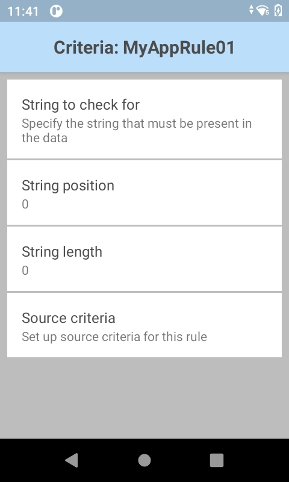

概要
高度なデータ形式では、取得したデータを、その内容に基づいて操作したり、特定の基準に従ってアクションをトリガ (または防止) するために構成された独自のルールに基づいて操作したりできます。たとえば、単純なルールでは、カーソルを 4 文字先に移動したり、あるテキスト フィールドから別のテキスト フィールドに移動したりできます。取得した 16 桁の番号の最初の 4 桁が特定の銀行の番号と一致する場合にのみ、アクションをトリガする複雑なルールを作成することもできます。任意の数のルールと相互依存関係を作成できるため、DataWedge は、事実上あらゆるデータ処理要件に適合する可能性があります。
データ処理用のコントロールは、[基本データ形式] および [高度なデータ形式] として表示され、出力設定とともにプロファイルの設定パネルにグループ化されます。
関連項目:
ADF コンポーネント
高度なデータ形式の機能は、ルール、基準、およびアクションを通じて実行されます。
ルール
1 つ以上の処理アクションのコンテナと、アクションをトリガするユーザー定義可能な基準です。すべての DataWedge 出力プラグインには、取得したデータを処理するための 1 つ以上の ADF ルールを含めることができます。
注: ADF ルールでは、複数のスキャナが構成されている場合に、データをスキャンするのに使用するスキャナを選択できません。
基準
処理アクションを実行するためのトリガです。基準は、入力タイプ (バーコード スキャナからのデータのみなど)、シンボル体系 (Code39 データのみなど)、およびデータ内の指定した文字列 (データ文字列内の指定した位置にある文字列や指定した長さの文字列) に従って設定できます。取得したデータが、定義された基準の一部に一致しない場合、アクションはトリガされません。サポートされているバーコード タイプの一部またはすべてを選択または除外できます。
アクション
取得したデータを分析、識別、処理するための一連の手順です。
4 つのアクション タイプ:
- カーソル移動 (最初の 10 文字をスキップなど)
- データ変更 (すべてのスペースを削除し、左側に 4 つのゼロを埋め込むなど)
- データ送信 (最後の 4 桁を出力など)
- 一時停止 (次のアクションを実行する前に 50 ミリ秒一時停止など)
ADF ルールの作成
高度なデータ形式のセットアップは、以下の 3 つの基本的な手順で行います。
- ルールを作成します
- 基準を定義してルールをアクティブにします
- ルールによって実行されるアクションを定義します
これらの手順は、すべての DataWedge 出力プラグインに含まれている高度なデータ形式処理プラグイン内で実行されます。詳細については、「DataWedge プロファイル」を参照してください。
ADF ルールを作成するには:
1.ADF が必要なプロファイルで、次の図の強調表示されている [高度なデータ形式] をタップします。手順 2 の図のような画面が表示されます。
2.[ルール] をタップします。「3 本線」メニューをタップして、[新規ルール] を選択し、ルールの名前を入力します。この後の手順 3 の図のような出力プラグイン画面に、新しいルールが他のルールとともに表示されます。

3.新しいルールをタップして設定にアクセスします。手順 4 の図のような画面が表示されます。

基準の設定
4.次の図の強調表示されている [基準] をタップして、ルールをアクティブにする基準を入力します。

5.[基準] 画面で、以下のオプションに基づいてルールをアクティブにする基準を入力します。
アクションの基準:
チェックする文字列 - 取得したデータに存在する場合にアクション (取得した文字列の出力など) を開始する文字列を指定できます。指定した文字列が「開始位置」にない場合 (以下を参照)、アクションは実行されません。DataWedge では、英数字または制御文字の存在を確認できます。例:
- x - 文字「x」をチェックします
- \xhh - 16 進値が 0xhh の文字をチェックします
- \uhhhh - 値が 0xhhhh の Unicode 文字をチェックします
文字列位置 - [チェックする文字列] パラメータで指定した文字列のチェックを開始する位置 (0 から開始)。たとえば、文字列位置が 3 のターゲット文字列「AB」では、文字列「123ABC123」が取得された場合はアクションを呼び出しますが、「AB」が文字列内の他の場所にある場合 (または存在しない場合) はアクションを呼び出しません。この例の文字列の「AB」部分は、左から 4 番目の文字で始まりますが、0 からカウントを開始した場合は、位置が 3 になることに注意してください。
文字列長 - アクションの呼び出しの前に特定の長さ (文字単位) を指定できるオプションのパラメータです。たとえば、米国の社会保障番号をスキャンする場合、最初の検証手段として文字列長 9 を指定できます。
ソース基準 - バーコード スキャナ (これを通じて特定のデコーダを選択または除外することも可能) によって、または SimulScan を介してデータを取得した場合にのみアクションを呼び出すことができるオプションのパラメータです。
6.戻るボタンをタップして保存し、[ルール] 画面に戻ります。
ADF アクションの作成
アクションを追加するには:
7.[ルール] 画面で、下図で強調表示されている [アクション] をタップします。次画面のメニューから [新規アクション] を選択します。ステップ 8 の図のような、スクロール可能なアクションのリストが表示されます。
8.必要に応じてスクロールして、アクション リスト内の目的のアクションをタップします。アクションをタップすると、[ルール] 画面が再表示され、そのアクションが [アクション] リストの下部に追加されます。各アクションの説明については、以下の表を参照してください。
サポートされている ADF アクション
| タイプ | アクション | 説明 |
|---|---|---|
カーソルの移動 |
前にスキップ |
指定した文字数だけカーソルを前方に移動します (デフォルト = 1) |
後ろにスキップ |
指定した文字数だけカーソルを後方に移動します (デフォルト = 1) |
|
先頭にスキップ |
カーソルをデータの先頭に移動します |
|
次に移動 |
データ フィールドで指定された文字列が見つかるまでカーソルを前方に移動します |
|
次を過ぎるまで移動 |
データ フィールドで指定された文字列を越える位置までカーソルを前方に移動します |
|
データの変更 |
スペース クランチ |
単語間のスペースを 1 つに減らし、データの先頭と末尾のスペースをすべて削除します |
スペース クランチの停止 |
最後のスペース クランチ アクションを無効にします |
|
すべてのスペースの削除 |
データ内のすべてのスペースを削除します |
|
スペース削除の停止 |
最後のすべてのスペースの削除アクションを無効にします |
|
先頭のゼロを削除 |
データの先頭にあるすべてのゼロを削除します |
|
ゼロの削除を停止 |
前回の先頭のゼロを削除アクションを無効にします |
|
ゼロで埋める |
データの左側に、指定された数のゼロを埋め込みます |
|
ゼロ埋めの停止 |
前回のゼロで埋めるアクションを無効にします |
|
文字列の置換 |
指定した文字列を、指定した新しい文字列に置き換えます。両方の文字列を指定する必要があります。 |
|
すべての文字列置換の停止 |
すべての文字列の置換アクションを停止します |
|
文字列の削除 |
送信アクションが実行されたときに、特定の位置にある指定した文字数を削除します |
|
文字列削除の停止 |
後続の送信アクションからの文字の削除を停止します |
|
データの送信 |
次に送る |
現在のカーソル位置から指定した数の文字を送信します (デフォルト = 0) |
残りを送信 |
現在のカーソル位置から残っているすべてのデータを送信します |
|
次まで送る |
指定した文字列までのすべてのデータを送信します |
|
休止を送る |
次のアクションを実行する前に、指定したミリ秒数 (デフォルト = 0、最大 = 120000) だけ一時停止します。ENTER、LINE FEED、または TAB の文字を送信した後、50ms の一時停止を設定することをお勧めします。 |
|
文字列を送る |
指定した文字列を送信します |
|
文字を送る |
指定した ASCII/Unicode 文字を送信します。Unicode 文字の最大値は U-10FFFF (10 進数で 1114111) です。 |
|
通知 |
ビープ音 |
通知音を設定します |
- 特に記載がない限り、デフォルトのアクション値は 0、空、またはなしです。
- データ損失を最小限に抑えるためにも、ENTER、LINE FEED、または TAB 文字の送信後に 50 ミリ秒の一時停止アクションを送信することをお勧めします。
9.下図のように、必要なすべてのアクションがアクション リストに表示されるまで、手順 8 を繰り返します。アクションは、上から下に向かって順に実行されます。アクションを並べ替えるには、アクションの「3 本線」アイコンをドラッグします。以下の注記と例を参照してください。
 DataWedge 6.2 の [ADF Rule] 画面 (構成済みアクションがいくつかある状態)。
DataWedge 6.2 の [ADF Rule] 画面 (構成済みアクションがいくつかある状態)。
 DataWedge 6.2 の [ADF Rule] 画面 (構成済みアクションがない状態)。
DataWedge 6.2 の [ADF Rule] 画面 (構成済みアクションがない状態)。
アクションに関する注記:
- アクションは、リストの一番上から一番下に向かって処理されます。
- アクションの位置を変更するには、アクションのハンドル (名前の右側) をドラッグします。
- アクションを削除するには、アクション名を長押しします。
- ENTER、LINE FEED、または TAB アクション送信後の 50 ミリ秒の一時停止アクションにより、データ損失を最小限に抑えることができます。
ルールに関する注記:
- ルールを有効 ([ルール] 画面でチェックマークが付いた状態) にすると、親プロファイルが使用されるたびにルールが適用されます。
- プロファイルを通じて取得されたすべてのデータは、選択した出力プラグインに転送される前に、ルールに定義されているアクションに従って処理されます。
- ADF ルールが有効になっていない場合または定義されていない場合、デコード データは、処理されずに出力プラグインに渡されます。
非表示文字
制御文字、拡張 ASCII 文字、またはその他の非表示文字を検索または置換する ADF データ処理ルールをセットアップする場合、DataWedge では、文字の 16 進値を指定するための \xNN 表記と、Unicode 値用の \uNNNN 表記を使用できます。
たとえば、キャプチャしたデータにグループ セパレータ (GS) 文字 (\x1D) が含まれており、セパレータの両側のデータを取得する必要がある場合、ADF ルールに以下の ADF アクションを追加できます。
キャプチャするデータ: 8100712345(GS)2112345678
以下のアクションを実行します。
- 次まで送る (\x1D)
- 前にスキップ (1)
- 残りを送信
ADF ルールの例
データ処理シナリオで一般的な、高度なデータ形式ルールの作成プロセスの例を以下に示します。
バーコード スキャン基準:
- バーコード: Code39
- デコード長: 12 文字
- 開始位置の内容: "129"
DataWedge でのデータの形式化方法:
- すべての送信を 8 桁までゼロで埋める
- 文字 X までのすべてのデータを送信する
- スペース文字を送信する
この例の ADF ルールを作成するには:
- [ホーム] -> [DataWedge] -> [Profile0] をタップします。
- [高度なデータ形式] をタップします。
- [有効] をタップします。
- [Rule0] をタップします。
- [基準] をタップします。
- [チェックする文字列] をタップします。テキスト ボックスに「129」と入力して、[OK] をタップします。
- [文字列位置] をタップします。値を 0 に変更して、[OK] をタップします。
- [文字列長] をタップします。値を 12 に変更して、[OK] をタップします。
- [ソース基準] をタップします。
- [バーコード入力] をタップします。
- [すべてのデコーダが有効] をタップして、すべてのデコーダをオフにして無効にします。
- [Code39] をタップして、Code39 デコーダのみを有効にします。
- 戻るを 3 回タップします。
- [アクション] で、メニューが表示されるまで [残りを送信] をタップして長押しします。
- [アクションの削除] をタップします。
- [メニュー] > [新規アクション] をタップします。[ゼロで埋める] を選択します。[ゼロで埋める] アクションがアクション リストに表示されます。
- [ゼロで埋める] アクションをタップします。
- [数] をタップします。値を 8 に変更して、[OK] をタップします。
- 戻るをタップします。
- [メニュー] > [新規アクション] をタップします。[次まで送る] を選択します。[次まで送る] アクションがアクション リストに表示されます。
- [次まで送る] アクションをタップします。
- [文字列] をタップします。テキスト ボックスに「X」と入力して、[OK] をタップします。
- 戻るをタップします。
- [メニュー] > [新規アクション] をタップします。[文字を送る] を選択します。[文字を送る] アクションがアクション リストに表示されます。
- [文字を送る] アクションをタップします。
- [文字コード] をタップします。テキスト ボックスに「32」と入力して、[OK] をタップします。
- 戻るをタップします。
次の図のような [Rule0] 画面が表示されます。
DataWedge 出力オプション:
- キーストローク - 取得したデータを、キーボードが押されたかのように出力します
- インターネット プロトコル - TCP または UDP を使用してネットワーク経由でデータを出力します
- インテント - インテント エクストラとしてデータをアプリに配信します
関連ガイド: